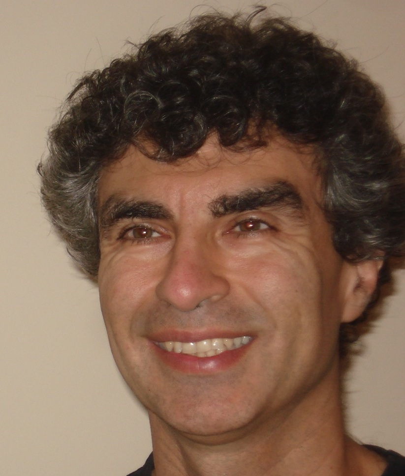

|  |
Yoshua Bengio Full Professor Department of Computer Science and Operations Research Canada Research Chair in Statistical Learning Algorithms <my first name> (dot) <my last name> (at sign) umontreal (dot) ca |
Curriculum Vitae
Summary of CV:
| EDUCATION | ||
| • | Ph.D. Computer Science, @
McGill University, 1991 |
|
| • | M.Sc. Computer Science, @ McGill University, 1988 | |
PROFESSIONAL WORK |
||
| • | Full professor 2002-
@(DIRO, UdeM)
|
|
| • | Associate professor 1997-2002 @(DIRO, UdeM) | |
| • | Assistant professor 1993-1997 @(DIRO, UdeM) | |
| • | Researcher @ AT&T Bell
Labs, 1992-93 (and continued collaboration until 1997), with Yann Le Cun, Vladmir Vapnik,
Larry
Jackel, Leon Bottou, Patrick Haffner, Patrice Simard, Isabelle Guyon, and John Denker. |
|
| • | Postdoc @ MIT (with Mike Jordan), 1991-92 | TITLES AND DISTINCTIONS |
| • | Full Professor,
University of Montreal,
department of computer science and operations research (DIRO) |
|
| • | Canada Research Chair on Statistical Learning
Algorithms since 2000 |
|
| • | NSERC-Ubisoft Industrial Research
Chair |
|
| • | Member of the NIPS Foundation board |
|
| • | Recipient of the 2009 Urgel Archambault Prize from ACFAS
(for researchers in physics, mathematics, computer science, or engineering) |
|
| • | Fellow of the Canadian Institute for Advanced
Research (CIFAR) and co-director of its NCAP
program (Neural Computation and Adaptive Perception) |
|
| • | Fellow of
CIRANO (Interuniversity Centre of Research, Liaison, and Transfer of Knowledge on the Analysis of Organizations)
|
PROFESSIONAL INVOLVEMENT |
| • | Co-creator and General Chair for ICLR
since 2013 |
|
| • | General Chair for NIPS'2009 |
|
| • | Program Chair for NIPS'2008 |
|
| • | Co-organizer of the Learning Workshop
(a.k.a. as the "Snowbird Workshop" since it is often held there)
since 1998 with Yann LeCun |
|
| • | Action Editor, Journal of Machine Learning
Research |
|
| • | Editor,
Foundations and Trends in Machine Learning |
|
| • | Previously associate editor,
Machine Learning Journal,
IEEE Transactions on Neural Networks |
|
| • | Previously leader of the MITACS
Canadian research group on Statistical Learning of Complex
Data with Complex Distributions |
|
| • | Founder and head of the Montreal Institute for Learning Algorithms
(MILA), University of Montreal |
|
| • | Ex-Member of the board of the Centre de Recherches Mathématiques |
|
| • | Co-founder of a spin-off company winner of an entrepreurship prize: Apstat Technologies |
|